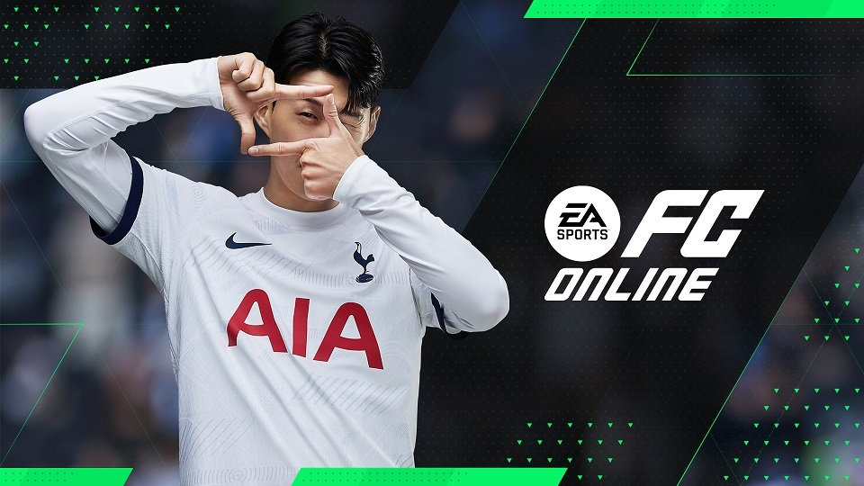

Nexon의 게임

메이플스토리
넥슨에서 개발한 2D 횡스크롤 MMORPG 게임. 2003년에 처음 출시되어 전 세계적으로 큰 인기를 얻은 이 게임은 판타지 세계에서 다양한 캐릭터를 만들고, 다른 플레이어들과 함께 퀘스트를 수행하거나 몬스터를 처치하며 경험치를 얻고 아이템을 획득하는 방식으로 진행

FC 온라인
넥슨에서 개발한 축구 게임으로, 온라인 멀티플레이어 방식으로 플레이할 수 있는 축구 시뮬레이션 게임. 이 게임은 실제 축구 경기의 규칙을 기반으로 하며, 다양한 모드와 팀을 선택하여 다른 플레이어들과 함께 실시간 경기를 진행 가능

서든어택
넥슨에서 서비스하는 1인칭 슈팅 게임(FPS)으로, 빠른 템포의 액션과 전략적인 팀워크가 중요한 게임 2005년에 출시된 이후, 한국을 비롯해 전 세계에서 많은 인기를 얻은 이 게임은 다양한 맵과 게임 모드를 제공 및 유저들이 실시간으로 팀을 이루어 상대팀과 경쟁 가능